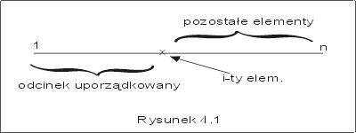

| « poprzedni punkt | nastêpny punkt » |
Problem sortowania mo¿emy zdefiniowaæ nastêpuj±co: Dany jest skoñczony ci±g e1, ..., en elementów pewnego zbioru liniowo uporz±dkowanego (E, £). Znale¼æ tak± permutacjê i1, ..., in liczb 1,..., n, ¿e ei1 £ ... £ ein.
Przyk³ad 1.1
Je¿eli elementami ci±gu e s± liczby 6,2,8,9,1, to szukan± permutacj± jest 5,2,1,3,4. Rzeczywi¶cie, pi±ty element jest najmniejszym elementem tego ci±gu, a czwarty jest elementem najwiêkszym. Ustawiaj±c elementy w kolejno¶ci: najpierw pi±ty, potem drugi, pierwszy, trzeci i czwarty, ustawimy wszystkie elementy danego ci±gu w porz±dku niemalej±cym. J
W tym i w nastêpnych punktach tego wyk³adu, bêdziemy poszukiwaæ takich algorytmów rozwi±zywania problemu sortowania, które u¿ywaj± tylko operacji porównywania elementów (mówimy, ¿e sortuj± w modelu drzew decyzyjnych (por. wyk³ad II, p.5). We wszystkich przedstawionych algorytmach zak³adaæ bêdziemy, ¿e ci±g jest reprezentowany przez tablicê e o elementach e[1],..., e[n]. Ponadto, zamiast szukaæ odpowiedniej permutacji indeksów ci±gu, bêdziemy dokonywaæ bezpo¶redniej permutacji elementów, tak by po zakoñczeniu algorytmu, zawarto¶ci± tablicy e by³ ci±g uporz±dkowany niemalej±co.
Specyfikacjê zadania sortowania ci±gu e1, ..., en scharakteryzujemy nastêpuj±cymi warunkami:
wp = {n > 0, e[1] = e1, ..., e[n] = en },
wk = {e[1] £ e[2] £ ... £ e[n] oraz istnieje taka permutacja i1, ..., in liczb 1,..., n,e[1] = ei1, e[n]= ein }.
Warunek pocz±tkowy stwierdza tylko, ¿e ci±g, który chcemy posortowaæ jest niepusty, a jego elementy zosta³y umieszczone w tablicy e. Warunek koñcowy natomiast stwierdza, ¿e warto¶ci tablicy e (po wykonaniu algorytmu) tworz± ci±g uporz±dkowany niemalej±co i warto¶ci te s± permutacj± elementów danego ci±gu e1, ..., en.
Najprostszym algorytmem sortowania jest algorytm sortowania przez wybór (inaczej "przez selekcjê"). Wymaga on wielokrotnego wyszukiwania elementu minimalnego. Aby nie powtarzaæ kodów ju¿ omówionych algorytmów, za³o¿ymy, ¿e min(e,i,j) jest optymalnym algorytmem, który dla dowolnej tablicy e i dowolnych liczb i, j £ n, znajduje pozycjê najmniejszego elementu w ci±gu e[i], e[i+1], ... , e[j], a swap(e[i], e[j]) jest procedur±, która dokonuje zamiany miejscami elementów i-tego i j-tego tablicy e.
Idea algorytmu
Idea tego algorytmu polega na sukcesywnym wybieraniu elementu najmniejszego z tych, które znajduj± siê w jeszcze nieuporz±dkowanej czê¶ci tablicy. Dok³adniej, sortowanie odbywaæ siê bêdzie w n-1 etapach. W i-tym etapie i-1 pierwszych pozycji tworzy ju¿ ci±g uporz±dkowany. Znajdujemy pozycjê, na której znajduje siê element najmniejszy w¶ród elementów e[i],...,e[n], a nastêpnie umieszczamy go na i-tej pozycji w tablicy, rozszerzaj±c w ten sposób ju¿ uporz±dkowany fragment.
Przyk³ad 1.2
Niech dany ci±g sk³ada siê z liczb ca³kowitych, 4,2,6,1,7,5. Kolejne stany tablicy e w trakcie wykonywania algorytmu s± nastêpuj±ce:
1,2,6,4,7,5 1,2,6,4,7,5 1,2,4,6,7,5 1,2,4,5,7,6 1,2,4,5,6,7
Elementy, które zamieni³y siê miejscami zosta³y zaznaczone t³ust± czcionk±. J
Algorytm sortowania przez wybór zapiszemy w postaci procedury SelectionSort z jednym parametrem formalnym typu "ci±g". Zak³adamy, ¿e obiekty tego abstrakcyjnego typu maj± okre¶lony atrybut lenght, który mówi o liczbie elementów ci±gu.
| SelectionSort (e : ci±g){ | |||
| i := 1; n := e.length; | |||
| while (i < n) do | // e[1] £...£ e[i-1], i £ n oraz e[i-1] £ {e[i],...,e[n]} | ||
| j := min(e, i, n); | // j jest pozycj± elementu najmniejszego w¶ród e[i],...,e[n] | ||
| swap(e[j], e[i]); | // e[1] £ ... £ e[i-1] £ e[i] oraz e[i] £ {e[i+1],...,e[n]} | ||
| i := i + 1; | // e[1] £ ... £ e[i-1] oraz e[i-1] £ {e[i],...,e[n]} | ||
| od; | // e[1] £ ... £ e[i-1], i = n oraz e[i-1] £ e[n] | ||
| } | |||
Analiza poprawno¶ci. Na rysunku 4_1 przedstawili¶my sytuacjê w naszym ci±gu na pocz±tku i-tej iteracji:

Uzasadnienie poprawno¶ci tego algorytmu jest bardzo proste. Niech przy wej¶ciu do pêtli bêd± spe³nione w³asno¶ci
i < n+1, e[1] £...£ e[i-1], e[i-1] £ e[k] dla wszystkich k, takich ¿e i £ k £ n. (*)
Dodatkowo wiemy, ¿e spe³niony jest test (i < n), tzn. i+1< n+1. Po wykonaniu instrukcji "j := min(e,i,n);" nie zmieni³a siê warto¶æ ¿adnego parametru z wyj±tkiem j, dla którego (na mocy za³o¿enia o poprawno¶ci algorytmu min) e[j] £ e[k] dla i £ k£ n. Po wykonaniu zamiany pozycji itej i jtej (swap(e[j],e[i])), wiemy, ¿e
i+1 < n+1 oraz e[1] £...£ e[i], e[i] £ e[k] dla wszystkich k, takich ¿e i £ k£ n.
Wykonanie instrukcji "i := i+1", spowoduje, ¿e znów prawdziwa bêdzie formu³a (*). Zatem znale¼li¶my niezmiennik pêtli. Poniewa¿ przed pierwszym wej¶ciem do pêtli, w³asno¶ci (*) s± trywialnie spe³nione, wiêc, gdy po n-1 krokach, nie bêdzie ju¿ spe³niony warunek i<n, znów spe³nione bêd± warunki (*). Co wiêcej, warto¶ci± zmiennej i jest wtedy n, czyli
e[1] £...£ e[n-1] oraz e[n-1] £ e[n].
Ponadto, dla ka¿dego i istnieje dok³adnie jedna liczba naturalna j niewiêksza od n, dla której e[i] = e j algorutmu.(jest to pozycja, na której znale¼li¶my element minimalny w i-tym kroku. To dowodzi ca³kowitej poprawno¶ci algorytmu SelectionSort wzglêdem przyjêtej specyfikacji.
Zauwa¿my jeszcze, ¿e ¿adne szczególne cechy struktury danych nie by³y tu wykorzystywane, poza za³o¿eniem, ¿e relacja £ jest porz±dkiem liniowym. Zatem prawdziwe jest twierdzenie:
Twierdzenie 1.1 Dla dowolnego niepustego ci±gu, o elementach nale¿±cych do dowolnej struktury danych, w której jest okre¶lony liniowy porz±dek, algorytm SelectioSort zatrzymuje siê, a otrzymany wynik spe³nia warunek koñcowy
wk ={e[1] £...£ e[n-1]£ e[n]}.
Analiza kosztu: Koszt tego algorytmu mierzymy liczb± wykonanych porównañ. S± one wykonywane w tre¶ci funkcji min. Poniewa¿ i zmienia siê od 1 do n-1, zatem w kolejnych iteracjach szukamy minimum w coraz krótszych fragmentach ci±gu. Zgodnie z przeprowadzon± wcze¶niej dyskusj± kosztu algorytmu min, wyszukanie pozycji, na której znajduje siê element minimalny w ci±gu n-(i-1) elementowym wymaga dok³adnie n-i porównañ. Liczba wykonanych porównañ jest sum± kolejnych liczb naturalnych od n-1 do 1.
T(SelectionSort, n) = (n-1) + (n-2) + ... + 2 +1 = n(n-1)/2
Funkcja ta jest niestety kwadratowa, asymptotycznie d±¿y do nieskoñczono¶ci tak jak funkcja n2.
Du¿o lepiej wypadnie koszt je¶li mierzyæ go bêdziemy liczb± wykonanych operacji "swap". Poniewa¿ w ka¿dej iteracji pêtli "while (i<n)" wykonujemy tylko jedn± tak± operacjê, zatem wykonamy ich ³±cznie n-1. Koszt mierzony liczb± operacji swap jest wiêc liniowy.
Zauwa¿my jeszcze, ¿e liczba wykonanych porównañ nie zale¿y ani od warto¶ci elementów, ani od kolejno¶ci w jakiej elementy wystêpuj± w danym ci±gu.
Algorytm sortowania przez wybór sortuje w miejscu, tzn. wykorzystuje tylko pamiêæ konieczn± do przechowywania danych i kilka zmiennych pomocniczych. Jego koszt pamiêciowy jest wiêc liniowy w stosunku do rozmiaru danych, S(SelectionSort,n) = Q(n)
Pytanie 1: W pewnej implementacji algorytmu SelectionSort, wszystkie wykonywane porównania zosta³y zilustrowane graficznie. Porównywane elementy s± przez 30 milisekund wy¶wietlane na ekranie, innym, ni¿ pozosta³e elementy ci±gu, kolorem. Ile czasu zajmie nam ogl±danie wykonania tego algorytmu dla n=200?
| « poprzedni punkt | nastêpny punkt » |